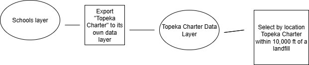
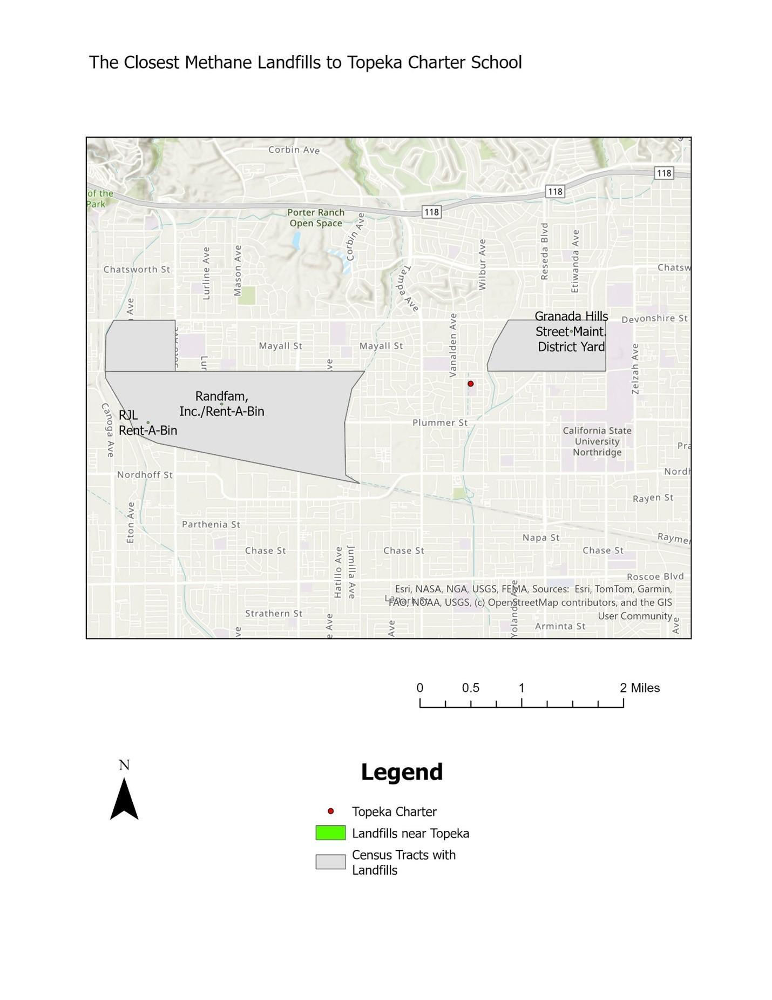
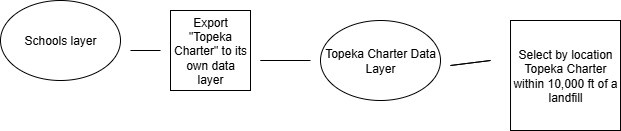
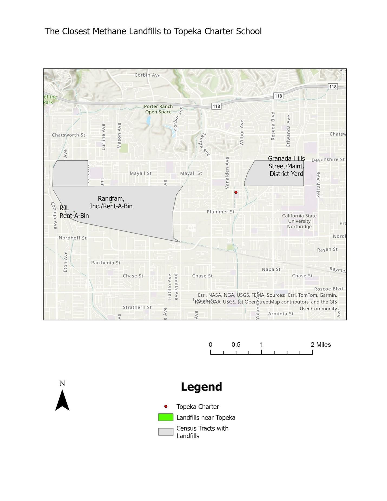

Project Overview
Studies have shown that methane exposure can have negative impacts on human health, particularly for children and young adults. This GIS project raises awareness around potential environmental justice concerns by examining the proximity of methane-producing landfills to schools and colleges in Los Angeles, and analyzing how income levels intersect with environmental risk.
Data Layers Used
- Schools, Colleges, and Universities – Contains school level, type, name, address, city, and organization.
- Methane Producing Landfills – Spatial data identifying the name and location of methane-producing landfills.
- Income per Capita (Census Tracts) – Census tract data containing income per capita values for the Los Angeles area.
Analysis Questions
- Which schools located in the City of Los Angeles are within 0.5 kilometers of methane-producing landfills?
- Which census tracts contain these schools, and are they among the lower 50% in income per capita?
- What is the wealthiest census tract (by income per capita) that contains a landfill?
- What is the closest methane-producing landfill to Topeka Charter School for Advanced Studies?
GIS Methods Used
- Select by Attributes to identify schools located in the City of Los Angeles
- Buffer Analysis (0.5 km) around methane-producing landfills
- Select by Location to identify schools within landfill buffer zones
- Spatial Join to associate schools with census tract income data
- Statistical Classification to identify census tracts in the lower 50% of income per capita
- Near / Distance Analysis to determine closest landfill to a selected school
 



Results
The analysis identified multiple schools located near methane-producing landfills within the City of Los Angeles. When intersected with income data, several of these schools were found within census tracts that fall in the lower 50 percent of income per capita, highlighting potential environmental justice concerns. The analysis found that there are 53 schools located in the city of Los Angeles within 0.5km of a landfill. Those schools fall in 29 census tracts with a median income per capita of $23,674. There are 14 cencus tracts that are in the lower 50 percent of Census Tracts in income_per_capita.
The wealthiest census track in the City of Los Angeles that has a methane producing landfill is 0603726200 (Bel Air, Los Angeles). That census track has an income per capita of $123,717. If looking at the entire county, the City of Pasadena has the wealthiest census track with a landfill, 06037460800 with an income per capita of $140,171. The closest methane-producing landfill to Topeka Charter School for Advanced Studies is the Granada Hills Street Maintenance District Yard, located slightly over 5,000 feet away.